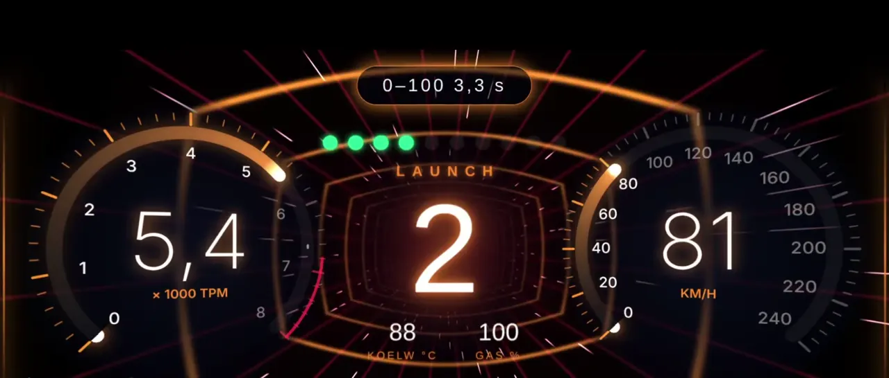
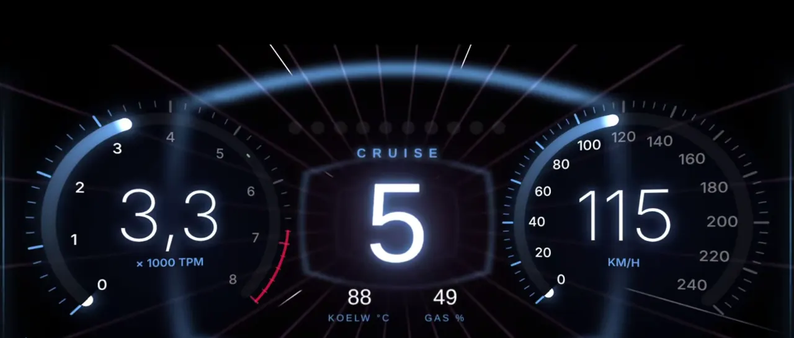

Particulier voor wie een auto koopt of heeft
Koop je volgende auto met zekerheid.
Een adapter in de auto, en PidLane vertelt in gewone taal wat de motor weet. Sta je bij een verkoper? Dan kijkt je eigen monteur live mee, waar hij ook zit.
Je kenteken gaat alleen naar de open data van de RDW, voor merk, model en brandstof. We slaan niets op. Alle meetwaarden in deze proef zijn verzonnen: je auto wordt niet echt uitgelezen.
Merk, model en brandstof komen van de RDW. De rest is een verzonnen voorbeeld van wat PidLane laat zien.
01 Meekijken op afstand
Jij staat bij de verkoper. Je monteur kijkt mee.
Je hoeft zelf niets van auto's te weten. Steek de adapter erin, geef je vaste garage of die handige buurman een code, en hij ziet op zijn eigen telefoon of computer live wat de motor doet. Terwijl jij daar nog staat.
beveiligd
Adapter erin
Bij de verkoper, in de OBD2-poort onder het stuur. Contact aan, PidLane verbindt vanzelf.
Deel de code
Stuur de 10-cijferige code, de link of de QR-code naar je monteur. Via WhatsApp, of lees hem voor aan de telefoon.
Hij ziet wat jij ziet
Live meters, foutcodes en de sensoren die hij extra wil zien. Zelf heeft hij geen adapter nodig.
Jij beslist
Met een vakman aan de lijn die de meting heeft gezien. Hij kan alleen kijken, niets veranderen.
02 Wat je nodig hebt
Drie dingen. Die je waarschijnlijk al bijna hebt.
Een OBD2-adapter
Een Bluetooth-adapter van een paar tientjes. Getest met de Vgate iCar Pro BT 3.0 en de OBDLink MX+; andere ELM327-adapters werken meestal ook.
Een Android-telefoon
Met de app, of gewoon in Chrome. Op een iPhone kan het uitlezen helaas niet; meekijken kan je monteur wél op elk toestel.
Een auto met OBD2
Vrijwel elke benzineauto vanaf 2001 en diesel vanaf 2004. Hybride en elektrisch hebben eigen controles.
03 Nieuw in de app
Ook na de aankoop blijft hij meekijken.
Hyperlane op het dashboard, de vier banden in één venster, een winterkaart die het weer naast je auto legt, en een conditiescore die zakt als je onderhoud uitstelt, met de reden erbij.

Een dashboard dat meerijdt
Neon-tunnel, ringen die meekantelen en een kleur die je rijstijl leest.
Vier banden in één venster
Druk en temperatuur, en welke band achterloopt op de rest. Op auto's die het via OBD geven.
Weer vooruit
"Vannacht −4 °C en je hebt zomervloeistof." Plaats uit een lijst, geen locatie.
Score met een reden
Je auto vergeleken met zichzelf, rit na rit. Te weinig ritten? Dan zegt hij dat.
04 Wat het kan
Van "wat betekent dat lampje?" tot een complete koopcheck.
Check mijn auto
Eén oordeel bovenaan, rood, oranje of groen, met drie vervolgstappen. De volledige uitlezing staat eronder voor wie het wil zien.
Kenteken-check
APK, NAP-oordeel, terugroepacties en import, rechtstreeks van de RDW.
Aankooprapport
Een vaste doorloop voor een tweedehands auto, met de zelftests die verraden of er kort geleden fouten zijn gewist. Als PDF.
Ritmonitor
Let tijdens de proefrit op uitvallende sensoren en uitschieters.
Mijn voertuigen
Tot drie auto's met hun rapporten, ritten en open punten, op elk toestel waarop je inlogt.
In gewone taal
Wat er aan de hand is, hoe zeker dat is en welk onderdeel de eerste verdachte is. Te delen als PDF.
Wintercheck
Banden, ruitensproeier en het weer voor je woonplaats.
Klokje boven je navigatie
Beeld-in-beeld met naald en stopknop, zodat je blijft zien wat de auto doet terwijl je navigeert.
05 Eerlijk is eerlijk
Geen monteur in je broekzak. Wel een goede eerste blik.
Een monteur blijft de baas
PidLane vertelt wat de elektronica weet en wat dat waarschijnlijk betekent. Een afwijking laat je door een vakman bevestigen voor je gaat repareren.
Wat de motor niet weet, zeggen we niet
Roest en schokdempers zitten niet in de elektronica. Daar maken we niets van, en de app zegt het er eerlijk bij.
Je chassisnummer blijft van jou
Het VIN verlaat je telefoon nooit onbewerkt: het wordt eerst gepseudonimiseerd. Op deze website staan geen trackingcookies.
Eerst zien, dan beginnen
De app heeft een demostand die een verbinding nabootst, net als de proef hierboven. Er wordt dan niets opgeslagen.
Vragen
Goede vragen.
Moet ik verstand hebben van auto's?
Nee. Je krijgt één oordeel in rood, oranje of groen, met in gewone taal wat er aan de hand is en wat je nu kunt doen. En twijfel je, dan laat je iemand met verstand van zaken op afstand meekijken.
Hoe kijkt mijn monteur mee?
Jij tikt op delen en stuurt hem een 10-cijferige code, een link of een QR-code. Hij opent PidLane op zijn telefoon of computer en ziet live dezelfde meters. Hij kan zelf foutcodes opvragen en extra sensoren laten volgen. De sessie blijft vier uur geldig.
Kan mijn monteur iets aan de auto veranderen?
Nee. Meekijken is alleen kijken. Foutcodes wissen kan nooit op afstand: dat kan alleen wie bij de auto staat.
Mag ik zomaar een adapter in de auto van een verkoper steken?
Vraag het even; de meeste verkopers vinden het prima, en wie weigert vertelt je daarmee ook iets. Uitlezen verandert niets aan de auto.
Werkt het op een iPhone?
Het uitlezen van de auto nog niet: daarvoor is een Android-telefoon nodig, met de app of met Chrome. Meekijken op afstand werkt wel op elk toestel met een browser.
Is de proef op deze pagina echt?
Alleen merk, model en brandstof: die komen van de open data van de RDW. Alle meetwaarden, foutcodes en uitkomsten zijn verzonnen. Je auto wordt niet uitgelezen en we bewaren je kenteken niet.
Wat kost het?
De kenteken-check en de demostand kosten niets. Wat een volledige analyse kost, zie je in de app vóór je iets betaalt.

De volgende auto vertelt je alles.
Maak een account, probeer de demostand of check alvast een kenteken. Een adapter heb je pas nodig als je echt gaat uitlezen.